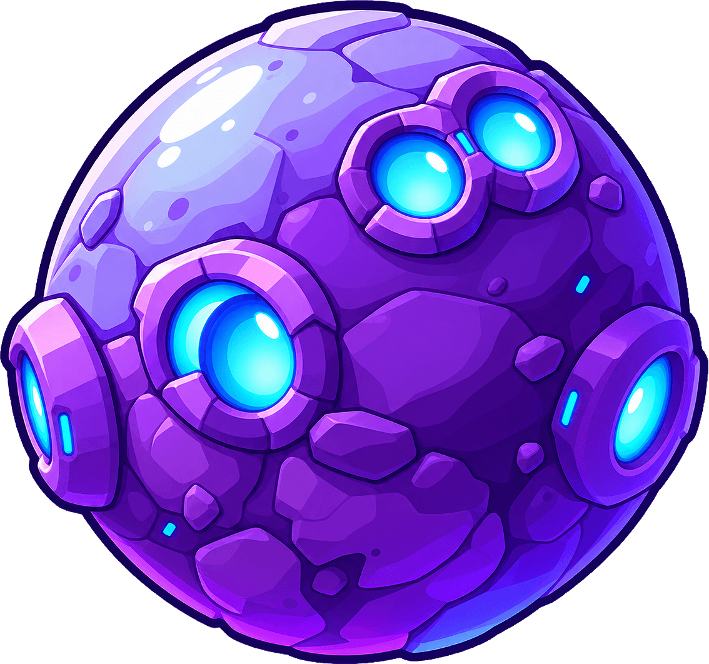
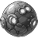
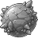
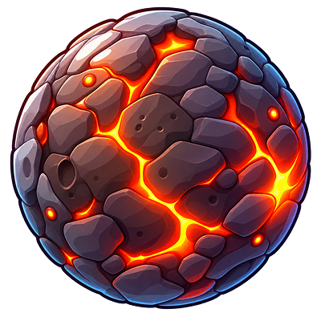
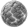

탐사선에 실린 연료 통 24개를 6개의 엔진에 똑같이 나누어 넣으면, 엔진 하나에는 연료 통을 몇 개 넣을 수 있을까요?







비밀번호를 눌러 구조물의 잠금 장치를 해제해 주세요.


이 문제는 넘어갈까요?
풀 수 있는 문제인데, 아깝게 놓칠 수도 있어요.
신중하게 결정해 주세요!
주의!
탐사를 종료할까요?
지금 나가면, 탐사가 이대로 종료돼요.
이대로 탐사를 끝낼까요?
시간이 다 됐어요!
탐사가 여기서 마무리돼요.
화면을 누르면 닫혀요.